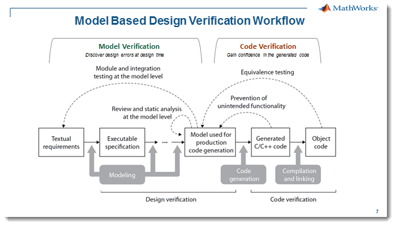
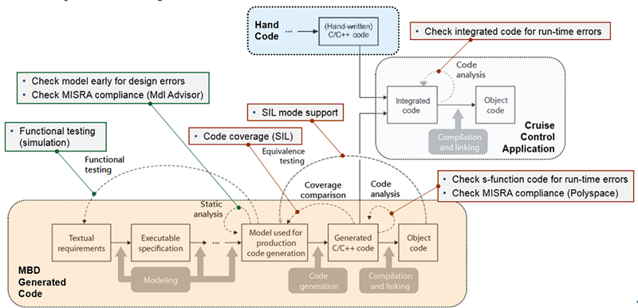
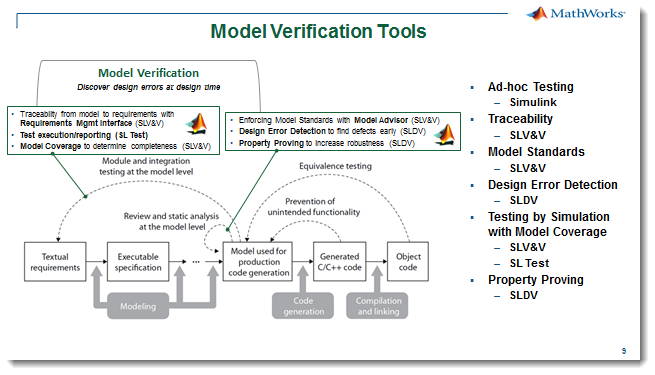
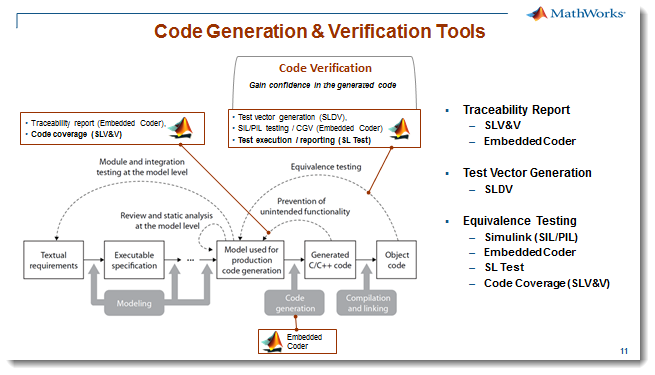

Step 9: Workshop Summary

We started with the overall workflow as shown above, and worked through a series of exercises to add continuous verification and validation activities to the workflow. In the end, we established a structured, formal testing framework for securing the quality, robustness and safety of our cruise controller:
- Showed benefits of ad-hoc testing for finding issues early,
- Linked textual requirements to the model and source code for traceability and early verification of requirements,
- Enforced modeling standards for model readability and source code efficiency, enabling re-use.
- Detected model design errors like "dead logic" and "divide by zero" using formal verification techniques,
- Dynamically tested the design using simulation test harnesses with requirements based input test vectors and expected outputs to verify design behavior meets the requirements,
- Verified the generated source code, compiled for host (SIL) and production hardware (PIL), by testing for equvalence in behavior with model,
- Modeled and validated key safety requirements using formal proofs.
In addition we have incorporated the use of Polyspace in an MBD workflow:



We have seen how to create and re-use test assets but there is more to consider when implementing a V&V workflow:
1. Creation of test inputs. These have been in the form of time traces, managed in spreadsheets. But we could also use .mat files to import into the Signal Builder block. But it's also possible to map a .mat file to the root inports. Test inputs could be in the form of a MATLAB function block or be managed in a Stateflow chart.
2. Creation of test harnesses. We have seen how to create these with the Test Harness functionality of Simulink Test. But what if you want to run tests on a subsystem in the model? Testing and debugging subsystems although not shown in the workshop is a core functionality of Simulink Test that includes synchronization of changes between the source model and the subsystem test harness. It is also possible to run the model by the root inport mapping method to apply test inputs directly to the algorithm model. Mapping .mat files and spreadsheet data to root inports is also supported in the Test Manager. So with this method no test harnesses are required. But you will still need to consider how the outputs will be verified.
3. Verification of results. We have seen how to do this in the test harness with the expected outputs with simple comparison operators and also using the compare runs function of SDI. But there are other ways to do the evaluation including using more sophisticated models to do online checking. In addition, the evaluation could be a MATLAB function block or a Stateflow chart. The unit under test may have several inputs and outputs that can be ignored at different times using validation time windows to specify when the evaluation is active. How the tests are executed needs to considered since this is often coupled to the selected evaluation method. We have seen how to manually run the model and do online evaluations. We have also shown how the Test Manager will run the tests, perform the evaluation and produce a test report.
4. Test automation. Several methods have been presented, starting with using the "Run All" button in Signal Builder to automate test execution with test inputs and outputs stored in SDI for manual evaluation. Next a script was created using the SDI API to automate the evaluation and creation of test reports. Lastly, Report Generator was used to completely automate the loading of model, test execution, evaluation and the report creation.
The general idea is to consider what methods will work best for your development and testing process based on the above points and other considerations. These may include the available resources to develop and maintain a custom process and tools. So often it is better to begin in a minimal way and then add as necessary through continuous improvement. Another consideration is the archiving of test result and the sharing or re-use of test assets.